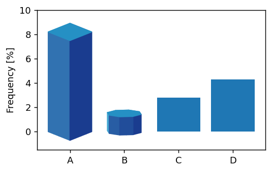
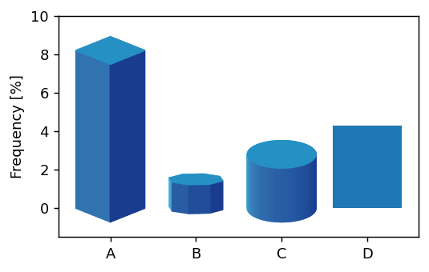

mpl-poormasn-3d provide a way to convert your bars to 3d. We will first try BarToPrism class. You create it by setting the lightsource and number of vertices of the shape. Its instance is callable object and can be used as a patheffect. The lightsource should be an instance of matplotlib.colors.LightSource.
BarToPrism takes several keyword arguments. ratio is for aspect ratio, i.e., smaller ratio will give you flat shape. The meaning of scale and rotate_deg should be self-explanatory.
p = ax.patches[1]numVertices =8bar_to_prism = BarToPrism(lightsource, numVertices, ratio=0.2, scale=0.8, rotate_deg=30)p.set_path_effects([bar_to_prism])

BarToCylinder will creat a cylinder.
from mpl_poormans_3d import BarToCylinderp = ax.patches[2]bar_to_prism = BarToCylinder(lightsource, ratio=0.4)p.set_path_effects([bar_to_prism])

BarToCharPrism will creat a 3d-bar using the character path and BarToPathPrism will do the same using an arbitrary path.
from mpl_poormans_3d import BarToCharPrismp = ax.patches[3]bar_to_prism = BarToCharPrism(lightsource, "d")p.set_path_effects([bar_to_prism])
The instance of BarToPrism and its siblings have a get_pe_face method which returns a patheffect that only show the face of the prism at a given position. 0 means bottom, 1 means top. Note that an instance of BarToPrism renders multiple paths and cannot be combined with other patheffects. On the other hand, return value of get_pe_face method can be combine with other patheffects, e.g., patheffects from mpl-visual-context.
We will create another plot, showing frequncy of Hangul characters (Korean characters) We need specify a font with Korean characters. For the example, we will us korean fonts included in the mplfoints package, but any Korean font should work.
from https://story.pxd.co.kr/958, w/o double consonant
We want the prism to have varuing shades. For that, we will use material palette. We will pick up the palette from the SecretColors package althoug the original palette is from google’s matrial design.
Prism instances can be created using the semenet_params.
from SecretColors import Paletteimport seaborn as snslightsource = LightSource(azdeg=25+90)palette = Palette("material")cnames =list(c for c in palette.colors.keys() if c notin ["black", "white"])rs = np.random.RandomState(8)cnames = rs.choice(cnames, len(cnames), replace=False)blur_effect = pe.ImageEffect(ie.Pad(10) | ie.Fill("k") | ie.GaussianBlur(3))for p, cn, c inzip(ax.patches, cnames, hangul_consonant): cc = [palette.get(cn, shade=shade) for shade in np.linspace(20, 90, 50)] segment_params = (ax, 25, cc, None) bar_to_prism = BarToCharPrism(lightsource, c, ratio=0.6, rotate_deg=10, fraction=0.5, scale=1.4, fontprop=fp, segment_params=segment_params, ) p.set_path_effects([ bar_to_prism.get_pe_face(0) | pe.FillColor("k") | blur_effect, bar_to_prism, bar_to_prism.get_pe_face(1) | pe.FillColor("w"), ])